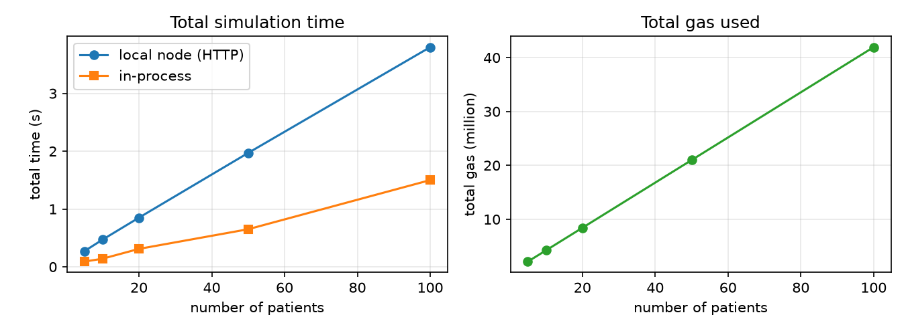
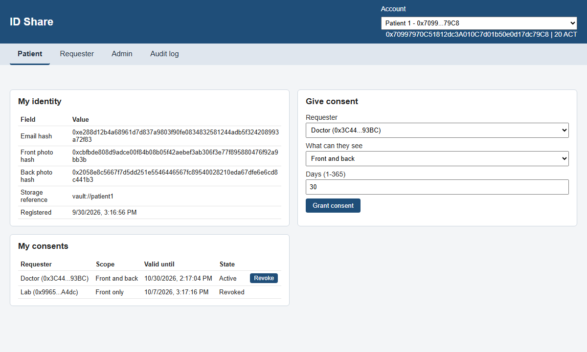

Consent-based sharing of government ID documents in healthcare on Ethereum
BCS3210 Blockchains, group project
[Names of the group members]
| Role | Can |
|---|---|
| Patient | register, grant / revoke consent, read log |
| Requester | request access, get allowed photos |
| Admin | approve requesters, pause |
flowchart TB
P([Patient]) -->|register| DI[DigitalIdentity]
A([Admin]) -->|approve| DI
P -->|grant / revoke| CM[ConsentManager]
CM -->|mint| T[AccessToken]
R([Requester]) -->|requestAccess| DS[DataSharing + log]
DS --> CM
DS --> DI
R -->|tx + signature| V[Vault off-chain]
V -->|checks event| DS
V -->|photos| R
A revert also rolls back the log entry, so a denied attempt would leave no trace.
requestAccess therefore always writes the log and emits an event, and returns true or false.
if (!approved) reason = NotApproved;
else if (!exists) reason = NoConsent;
else if (revoked) reason = Revoked;
else if (now >= expiresAt) reason = Expired;
granted = (reason == None);
accessLogs[patient].push(...);
emit granted ? AccessGranted
: AccessDenied(reason);
requestAccessEvery download has a matching entry in the on-chain audit log.
64 / 64 passing
Solidity tests with forge-std, incl. a fuzz test (256 runs)
Only generated addresses and fake hashes, no personal data.
| File | Tests |
|---|---|
| AccessToken.t.sol | 10 |
| DigitalIdentity.t.sol | 16 |
| ConsentManager.t.sol | 21 |
| DataSharing.t.sol | 13 |
| Integration.t.sol | 4 |
uint64, so a consent and a log entry each fit in one storage slotimmutable contract references| Operation | Before | After |
|---|---|---|
| requestAccess (granted) | 107,429 | 70,108 (-35%) |
| grantConsent (first) | 187,290 | 94,835 (-49%) |
| registerUser | 167,975 | 145,921 (-13%) |
| Deployment (all) | 3.14 M | 3.17 M (+1%) |


Questions?
Demo: npx hardhat node, npm run deploy:local, npm run frontend